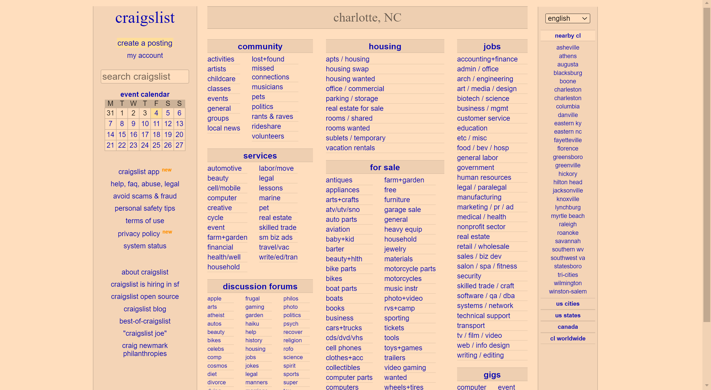

Website Evaluator
What is C.R.A.P?
The CRAP principles are vital when creating good websites. It stands for
- Contrast
- Repitition
- Alignment
- Performance
We will be comparing two websites on good and bad User experience
Good Website
 Nintendo
Nintendo
This website for NintendoLife is a nice example of a website that has good contrast as well as comfort. the white/red/black display shows strong colors that doesn't hurt the user's eyes. All content has a heading and is neatly aligned. Even the repitition is consistent with the sidebar content. Overall...A GOOD site!
Bad Website
 craigslistIf you were to first go on this page without knowing, would you know that this is craigslist? The contrast is non-existent since it's pretty much all white and purple from the sea of links. I get convience but it feels like more work searching for the link than if it was organized more neatly. The repitition is there though. The major problem is the lack of design. Otherwise it would be a decent site.